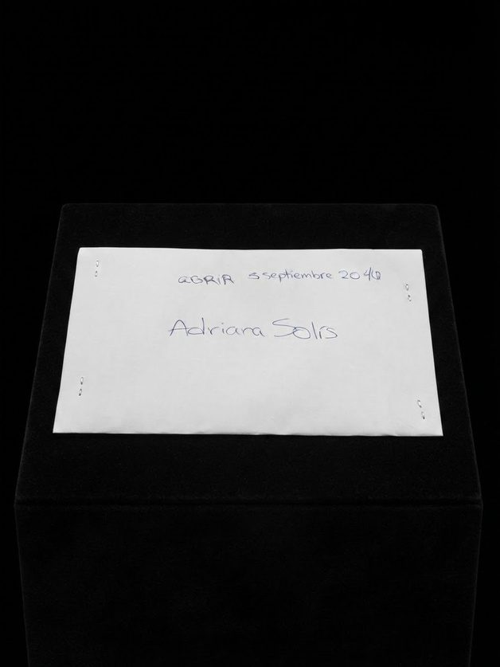
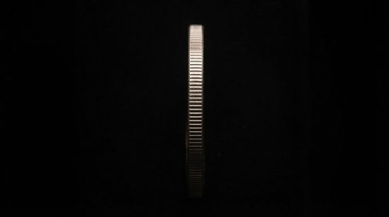
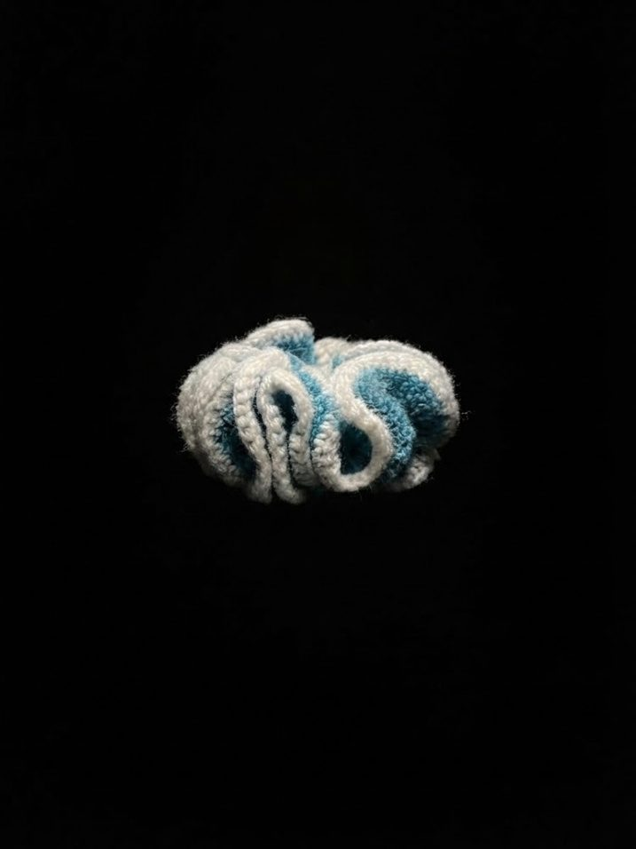
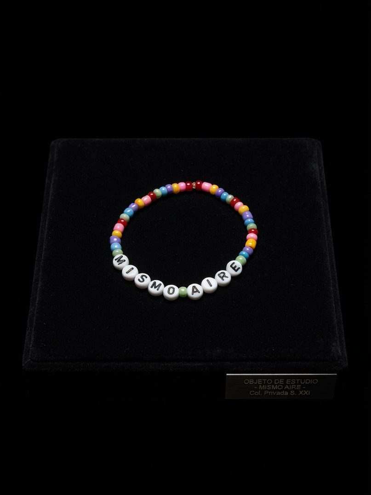

−2.40 · Colección permanente — 4 piezas · Cohorte 2026
Adriana Solís
4 piezas enterradas bajo la escuela. Ninguna puede verse hasta 2047.
−2.40 · pieza 01

Carta
Carta dirigida para mi yo futuro del 5 de septiembre de 2025
- Origen
- Ciudad de Panamá , Panamá . 31 de agosto de 2026
- Medidas
- Largo: 15.50cm. Alto: 22.0cm. Profundidad: 0.1mm
- Material
- Hoja de papel
- Filiación
- Carta hecha para mi yo futuro
- Depósito
- Cápsula MUFU · 8.983000° N 79.520000° W
−2.40 · pieza 02

Moneda
Moneda un Balboa de la jmj 2019. Un lado tiene la imagen de la iglesia de San jose en su parte dorada y en la parte plateada el nombre de la jmj. Del otro lado de la moneda está el escudo de Panamá en su parte dorada y en su parte plateada tenemos la descripción de medio balboa
- Origen
- Ciudad de Panamá , Panamá . 31 de agosto de 2026
- Medidas
- Diámetro: 2.30 cm, profundidad: 1 mm
- Material
- Metal
- Filiación
- Moneda significativa de la época
- Depósito
- Cápsula MUFU · 8.983000° N 79.520000° W
−2.40 · pieza 03

Cola
Cola tejida usando la técnica de crochet sobre una liga de tela de plástico
- Origen
- Ciudad de Panamá , Panamá . 31 de agosto de 2026
- Medidas
- Diámetro: 14 cm Profundidad: 5 cm
- Material
- Hilo de poliéster
- Filiación
- Primera cola tejida hecha por mi
- Depósito
- Cápsula MUFU · 8.983000° N 79.520000° W
−2.40 · pieza 04

Pulsera
Pulsera hecha de bisutería con un mensaje que dice el mismo aire
- Origen
- Ciudad de Panamá , Panamá . 31 de agosto de 2026
- Medidas
- Diámetro: 6.00 cm Profundidad: 3.00 mm
- Material
- Plástico
- Filiación
- Regalo de mi hermana
- Depósito
- Cápsula MUFU · 8.983000° N 79.520000° W
← Volver a la colección Apertura 05.09.2047 · 07:56